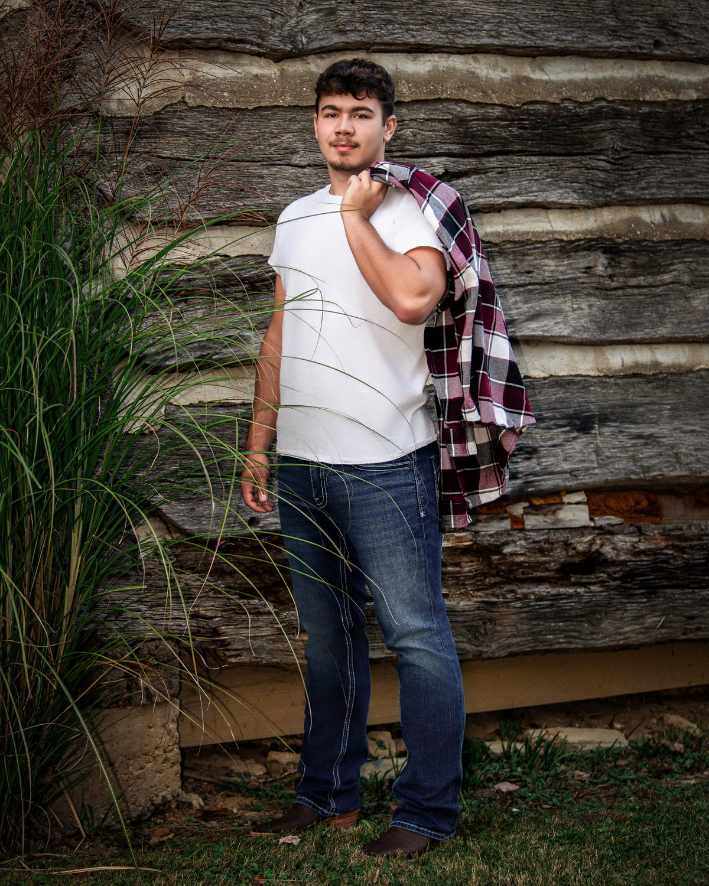
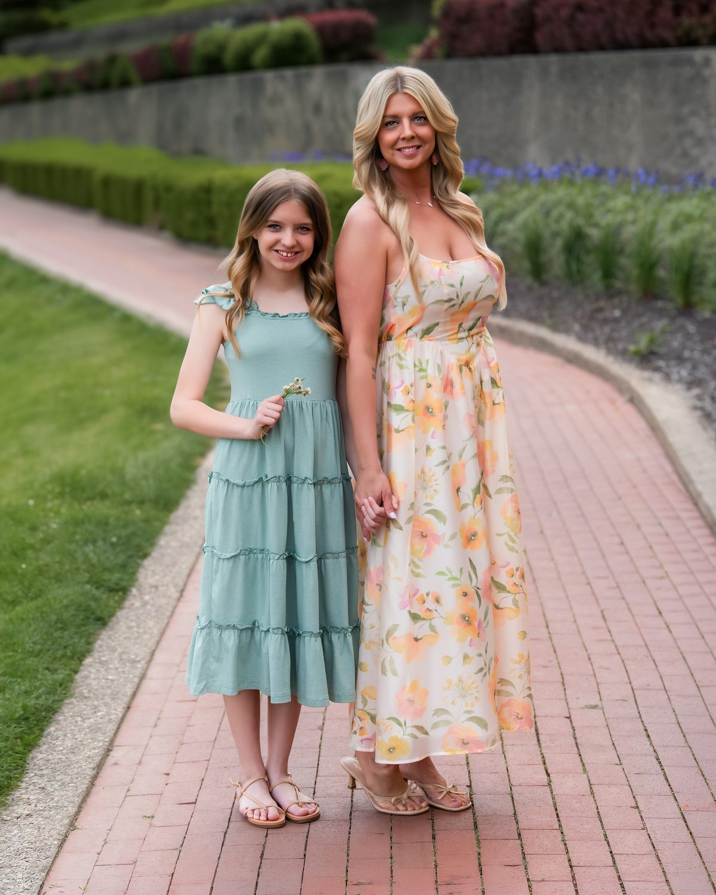
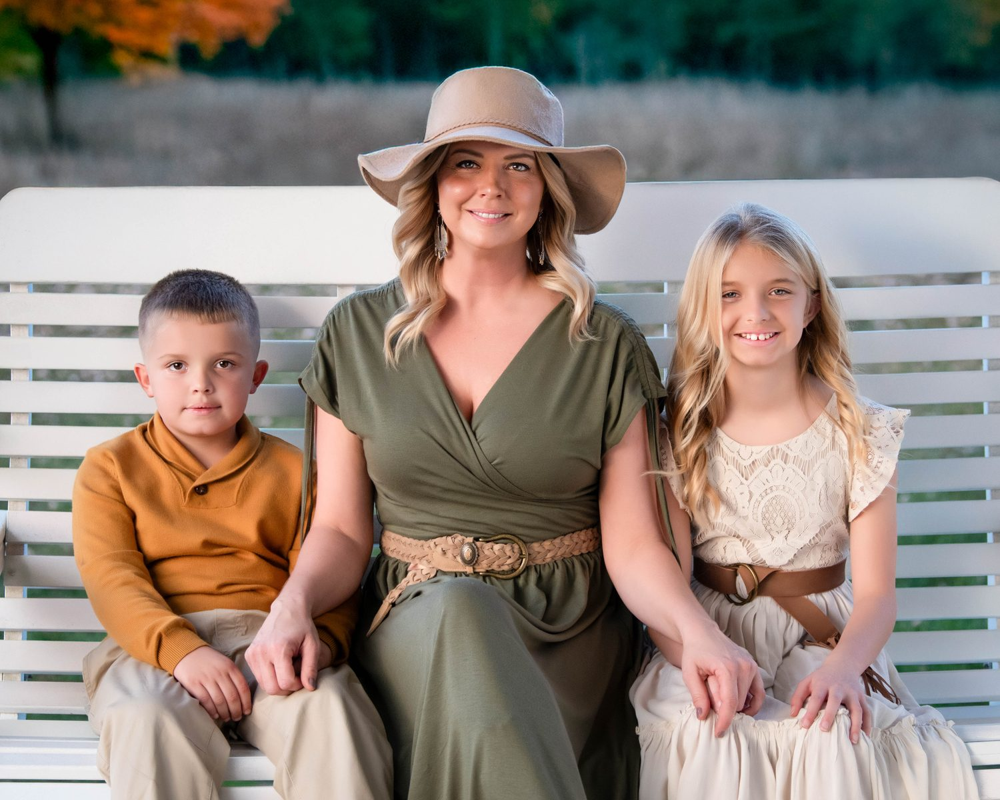

Family
The best time of year for family portraits in the Ohio Valley
By Donnie Stevens · Bellaire, Ohio · August 20, 2026
There is no single right season, only the right season for the portrait you have in mind.
It is the question we hear more than almost any other: when is the best time of year to have our family portrait made? The honest answer is that a family in soft wool by a fireplace, children ankle-deep in October leaves, and a newborn in quiet winter light are three beautiful portraits, and they belong to three different months. Here in the Ohio Valley, where the seasons announce themselves so clearly, timing is one of the first creative decisions we make together.
Start with the wall, not the calendar
A fine art portrait is designed for a specific place in your home, so the better first question is often when you want the finished artwork hanging there. A piece meant to be unwrapped at Christmas, a new baby announced, or a portrait made before a child leaves for college each points to a different starting date.
We suggest working backward: reserve your session six to eight weeks before you want art on the wall. The session is only the beginning. There is the design consultation where we plan size and framing at true scale, then the printing and hand-finishing that turn a photograph into an heirloom. This is the same guided, unhurried Portrait Experience we design for every family.

Autumn is the Ohio Valley at its most photogenic, and our most requested season.
Autumn: the valley at its best
September through November is our most-requested window, and it is easy to see why. The color that moves across Belmont County and down along the river, the low golden light, and the comfortable temperatures make this the natural moment for outdoor family portraits. It is also when families book to have artwork ready for the holidays, so September and October fill first. If your heart is set on fall color, this is the season to reserve early rather than hope for an opening.
The holidays: portraits with a purpose
The weeks around the holidays carry their own meaning. Family is gathered, generations are in one place, and a portrait made now can become the gift that outlasts every other. This is also the season of our Wonder of Christmas experience, and the warmth of the studio in Bellaire is its own advantage when the weather turns. The one thing to respect is the calendar: to guarantee finished, framed artwork before the holidays, we ask families to reserve by early November.

Winter in the studio means flawless light no matter the weather outside.
Winter: the quiet, luxurious season
Winter is our most underrated time of year, and quietly one of our favorites. With a calmer calendar, every family receives our most unhurried attention, and the controlled light of the studio means a flawless portrait regardless of the sky outside. It is the ideal season for newborns, whose first weeks arrive on their own schedule, and for anyone who wants the experience to feel slow and considered. A portrait made at the start of a new year marks the family exactly as it is, right now.
Spring: fresh starts and new light
As the valley greens and blooms return, spring brings a sense of renewal that photographs beautifully. This is when growing families introduce a new baby, when our senior season for the Class of 2027 begins to open, and when Mother's Day makes a portrait one of the most meaningful gifts of the year. Outdoor sessions become possible again, and spring's soft light flatters everyone.
Summer: long days, full lives
Summer loosens everyone's schedule, which makes it the season for togetherness. Reunions, visiting relatives, and multi-generational gatherings all create rare chances to have everyone in one frame. The long days stretch golden hour late into the evening. The valley's heat and humidity are worth planning around, so we often choose early morning light or the comfort of the studio, but few seasons make it easier to get the whole family in the same place at the same time.

Whatever the season, the portrait is designed for the room it will live in.
So when should your family book?
In a sentence: choose autumn for color, the holidays for gifting, winter for calm and newborns, spring for renewal, and summer for togetherness. But the deeper answer is simpler still. The best time to book is a little before the season you are picturing, so there is room to design the portrait properly rather than rush it.
You can see how we plan and price finished pieces on our investment page, or explore more family portraits before you reach out. Families grow, children change, and the milestones worth framing do not wait for a convenient month.
Family portrait questions
What is the best time of year for family portraits?
It depends on the portrait you want. Autumn is the most requested season in the Ohio Valley for its color and light, winter is the calmest in the studio and ideal for newborns, spring brings renewal, and summer is best for gathering the whole family. Whatever the season, we recommend booking six to eight weeks before you want the finished artwork on your wall.
When should we book a family portrait for the holidays?
To guarantee finished, framed artwork before the holidays, reserve your session by early November. That leaves time for the session, the design consultation, and hand-finishing your piece.
Do you photograph families year-round in the Ohio Valley?
Yes. Our studio is in Bellaire, Ohio, and we create family portraits year-round, indoors and outdoors, across the Ohio Valley, Belmont County, St. Clairsville, Wheeling, and Northern West Virginia.